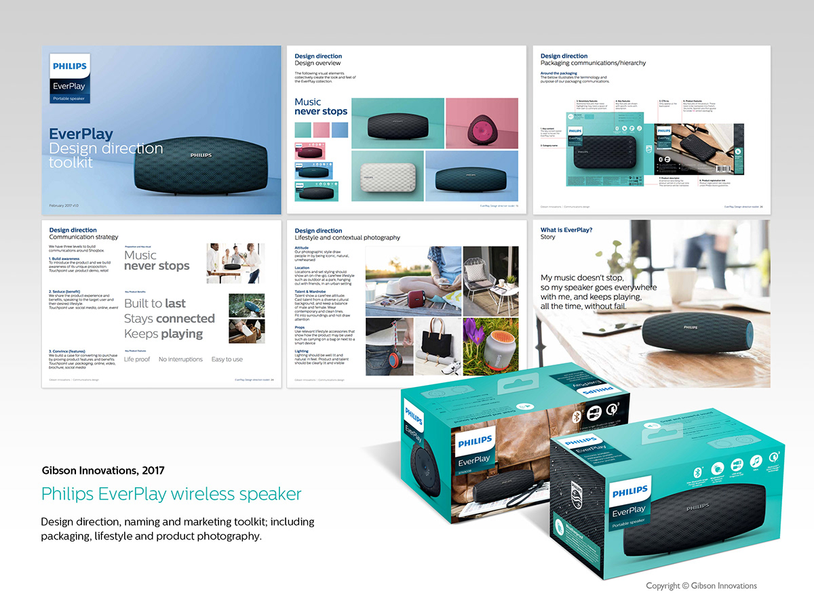

Philips Everplay bluetooth speakers
Design direction, naming, packaging and marketing toolkit
Create an overarching marketing communication that builds on three core product attributes: always connected - long lasting - durable.
Naming and copywriting was used to establish the concept “The music never stops” and then use of imagery reflects the durability of the materials used. Overall a successful project allowing the marketing department a strong consistent message.
